Le podcast qui t’explique comment la maison gagne. Ce document fixe tout ce qui fait qu’un visuel, une vidéo ou une miniature est reconnaissable comme un Zéro Vert.
Saison 1 · 10 épisodes · voix de Théo, Tom et Arthur · Podcast de prévention par le récit
À la roulette européenne, la case 0 est la seule qui n’est ni rouge ni noire. C’est la case verte : celle qui garde l’avantage de la maison sur chaque mise, sans jamais faire de pause. Le podcast porte son nom, et toute l’identité en découle : un zéro géant, une petite bille blanche, une couleur qui ne se confond avec aucune autre.
Direct, jeune, précis. On explique des mécanismes réels avec des chiffres, des histoires vraies et des sources.
Ni moralisateur, ni éditorial « raffiné », ni IA lisse. Aucun système pour gagner, aucun gain présenté comme désirable.
Néo-brutalisme « sticker » : aplats francs, bordures épaisses, ombres dures décalées, stickers inclinés. Pas de dégradé, pas de flou, pas de lueur.
Le symbole est une tuile lime à coins arrondis qui contient un « 0 » ultra-gras. Dans son centre repose la petite bille blanche de la roulette. Le mot-symbole est écrit en Bricolage Grotesque ExtraBold condensé : le « O » de ZÉRO est le seul large, c’est lui qui accueille la bille.
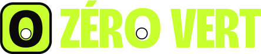
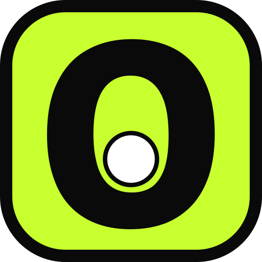
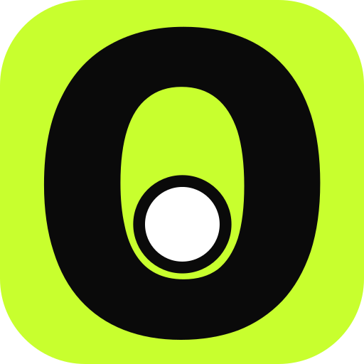
Fichiers : assets/podcast/mark.svg · favicon.svg · logo.svg · logo-dark.svg · cover.svg · cover.png (1400×1400). Générés par tools/podcast-brand.mjs.
Une palette courte, sans dégradé. Le lime est la signature (la case verte), le rouge est l’alerte et le piège, l’ink porte le texte.
| Texte sur fond | Ratio | Usage |
|---|---|---|
| Ink sur lime | 16,8 : 1 | Tous textes |
| Ink sur paper | 17,4 : 1 | Tous textes |
| Lime sur ink | 16,8 : 1 | Tous textes |
| Red sur ink | 5,9 : 1 | Titres et chiffres (AA) |
| Soft #D9D9D9 sur ink | 14,0 : 1 | Texte secondaire |
| Red sur paper | 2,9 : 1 | Pas de texte courant : uniquement gros chiffres / pastilles avec bordure ink |
| Lime sur paper | 1,0 : 1 | Interdit pour du texte |
≈ 60 % de la couleur de fond (lime, ink ou paper selon l’ambiance), ≈ 30 % d’ink ou de paper en contraste, ≈ 10 % de rouge et de blanc en accents. On alterne les fonds d’un plan à l’autre : lime pour l’énergie, ink pour la tension, paper pour la respiration.
Graisse 800, MAJUSCULES, interlettrage −0,04 em, interligne 0,9. Pour le texte courant : graisse 450, interligne 1,55, corps 17 px minimum.
Graisse 700, MAJUSCULES, interlettrage +0,04 em. Pour les pastilles, les légendes, les sources, les numéros, les montants.
| Rôle | Police | Taille / graisse |
|---|---|---|
| Titre géant (couverture, miniature) | Bricolage | 180–330 px · 800 · MAJ |
| Titre de section | Bricolage | 40–88 px · 800 · MAJ |
| Sticker | Bricolage | 14–52 px · 800 · MAJ |
| Étiquette / pastille | JetBrains Mono | 13–34 px · 700 · MAJ |
| Texte courant | Bricolage | 17 px · 450 |
Polices auto-hébergées (SIL OFL 1.1) : assets/fonts/. Jamais de serif, jamais d’or.
Le zéro géant en contour (trait ink de 7 px, sans remplissage) derrière le texte ; la bille blanche bordée d’ink ; la case verte lime isolée du reste ; les coins de cadre (⌜ ⌝) autour des cartons typographiques ; les cartons à fond plein avec un mot clé en lime ou en rouge.
Théo, Tom (Varxos) et Arthur. Narration seule ou débat à deux ou trois. Ton direct, complice, jamais donneur de leçons.
Un thème de marque au logo et à la fin de chaque épisode. Des lits musicaux sobres sous la voix, coupés pour les chutes et pour le paragraphe d’aide.
Voix −16 LUFS, master −14 LUFS, ducking de la musique sous la parole. Effets d’accent discrets quand la voix parle.
Toutes les miniatures partent du même gabarit (brand/miniature.html) : un gros titre, le numéro d’épisode en contour, un sticker rouge avec le chiffre-choc, le symbole en pied. Le fond alterne lime, ink et paper. Régénération : node tools/podcast-thumbs.mjs.
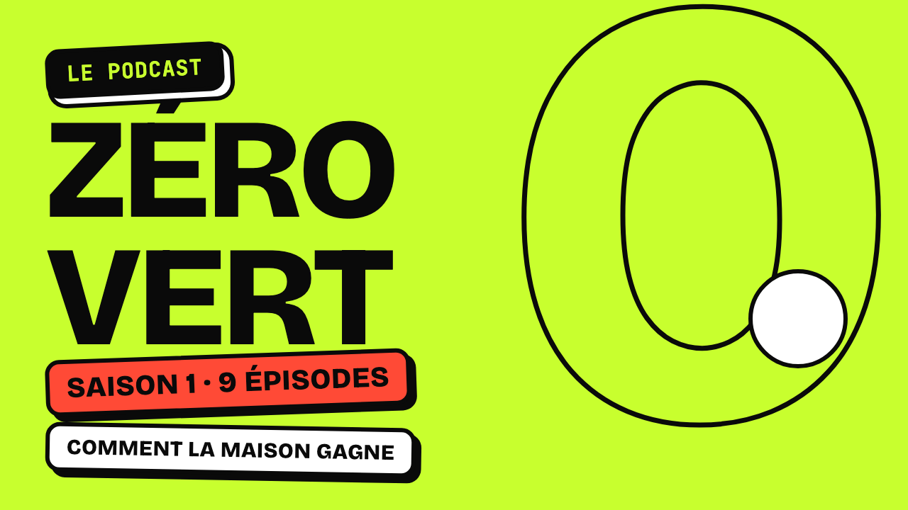
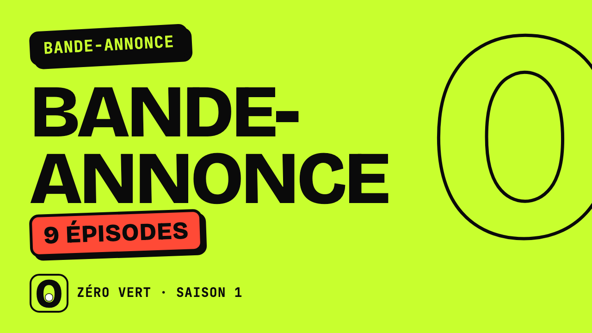
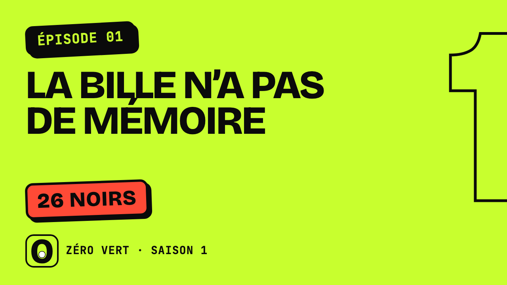
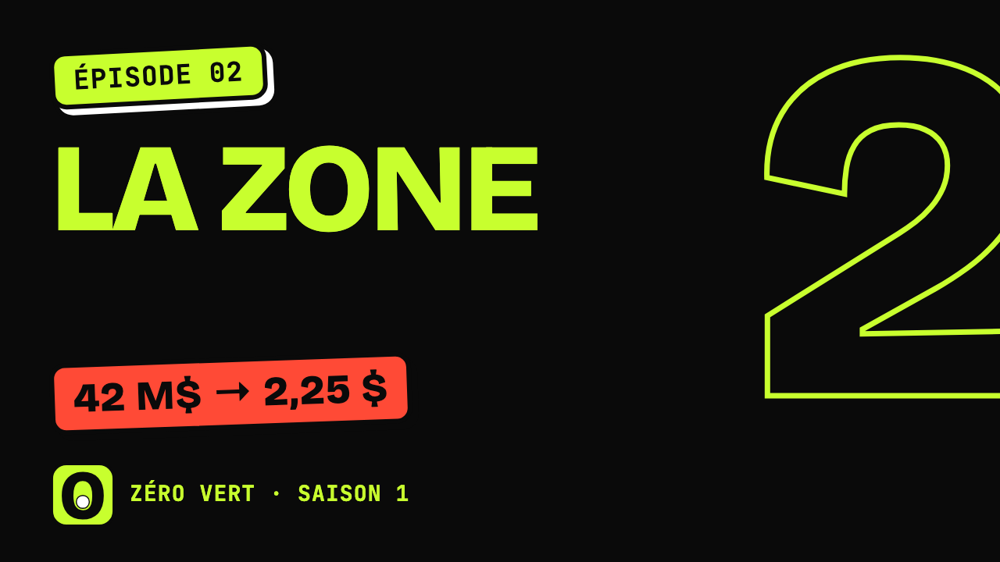
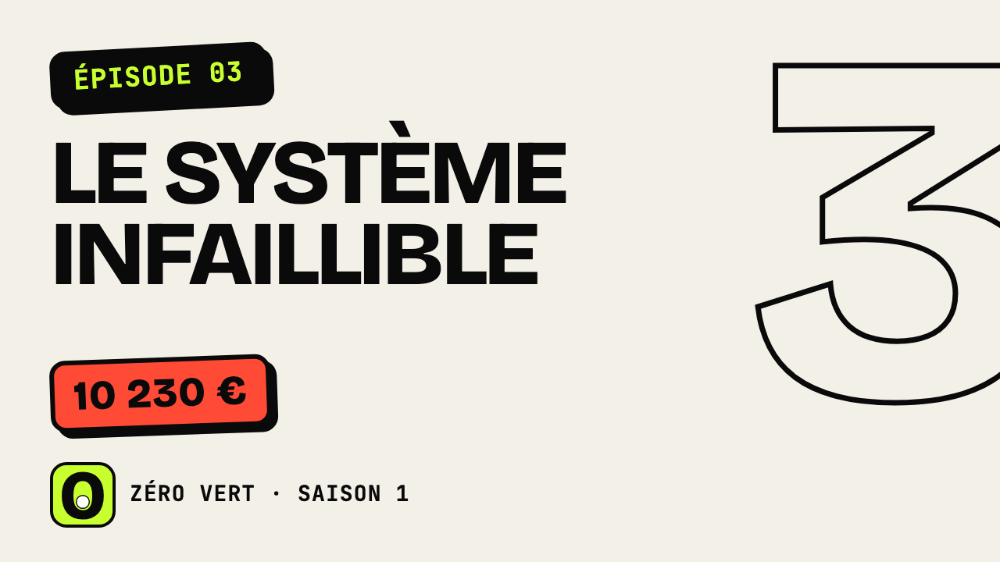
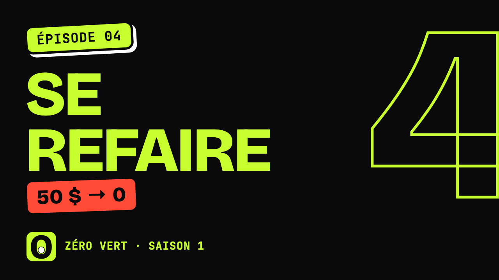
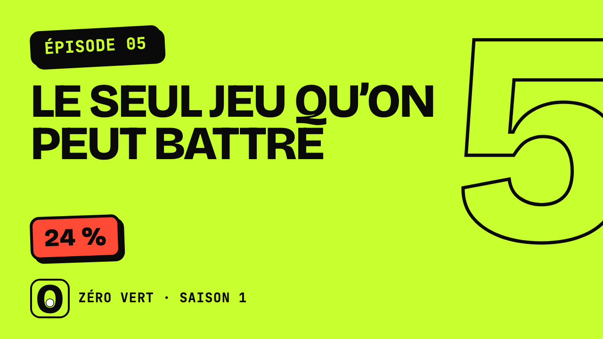
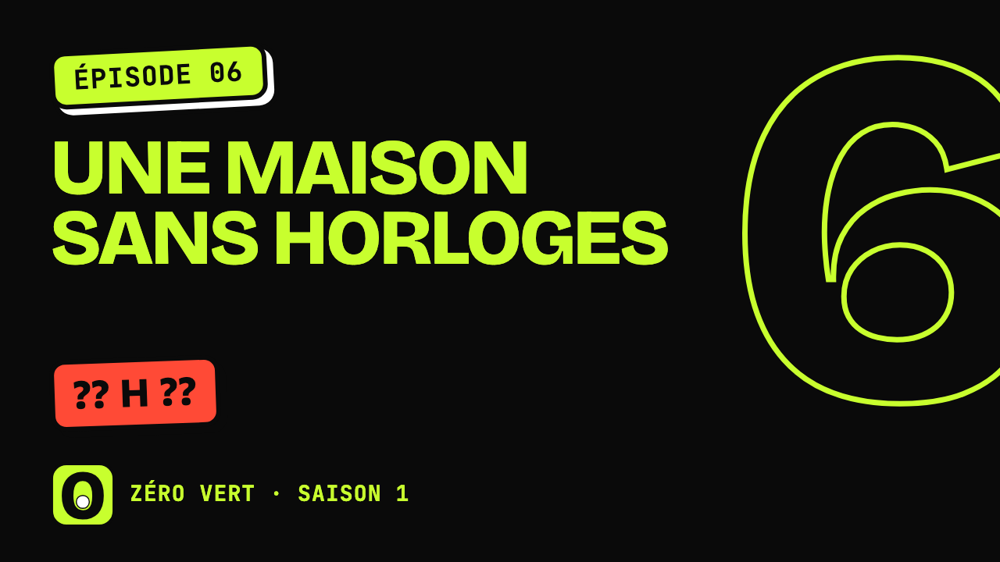
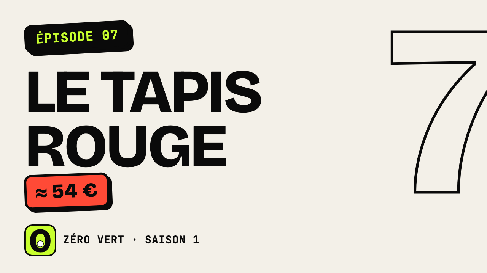
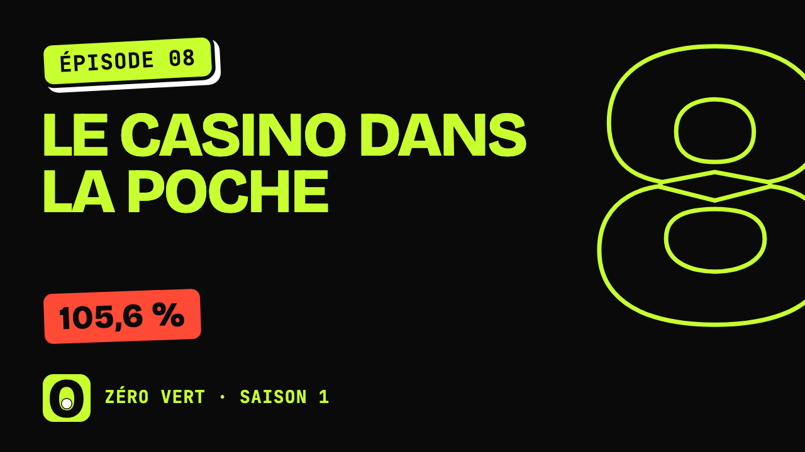
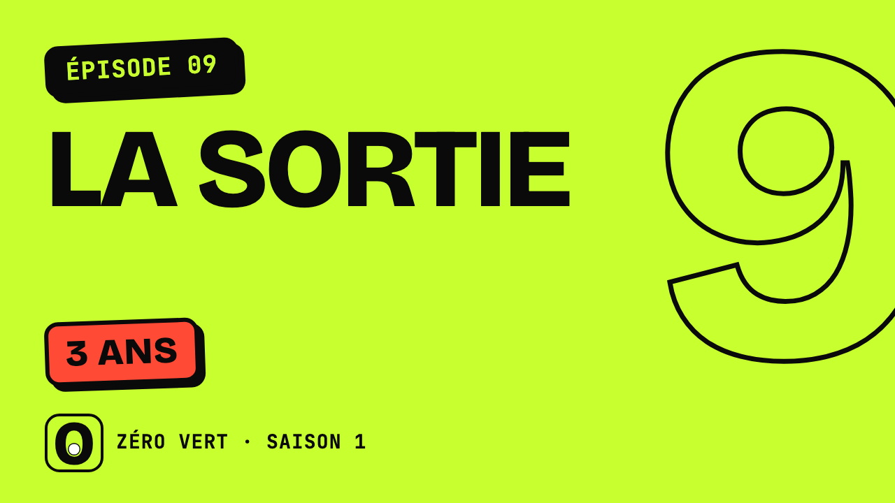
| Fichier | Taille | Usage |
|---|---|---|
| cover-3000.png | 3000 × 3000 | Couverture des annuaires de podcasts (Apple, Spotify…) |
| saison-1-youtube.png, episode-NN-youtube.png | 1280 × 720 | YouTube, aperçu des liens |
| saison-1-tiktok.png | 1080 × 1920 | TikTok, Reels, Shorts (visuel vertical) |